SQL Operations in QGIS
Turn-in for grading: This lab includes material that must be turned in for grading. Complete the required deliverables and submit them as instructed by the course.
Overview
This lab introduces SQL inside QGIS through the DB Manager and Virtual Layers tools.
The main task is to use saved and edited SQL queries to investigate a relational dataset of toxic release sites and chemicals, then turn those results into a final QGIS map layout.
Data
Download the lab package from:
The project includes:
toxic_sites_stateplanechemicalsschools_stateplane- A QGIS project file with saved SQL queries for the lab
Before You Start
- Unzip the lab package somewhere on your local hard drive.
- Keep the project file and data together.
- Expect to move between the QGIS main window and the DB Manager window.
Important idea: In this lab, QGIS is acting a bit like a database client. You are not writing SQL against a remote PostgreSQL server or a full external database. You are using QGIS' Virtual Layers system to query project layers as though they were database tables.
Part 1: Open the Project and Examine the Data
Open the project
- Open the
relates.qgzQGIS project file from the unzipped lab folder.
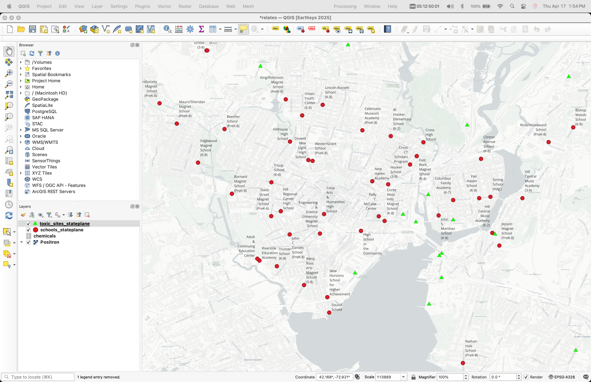
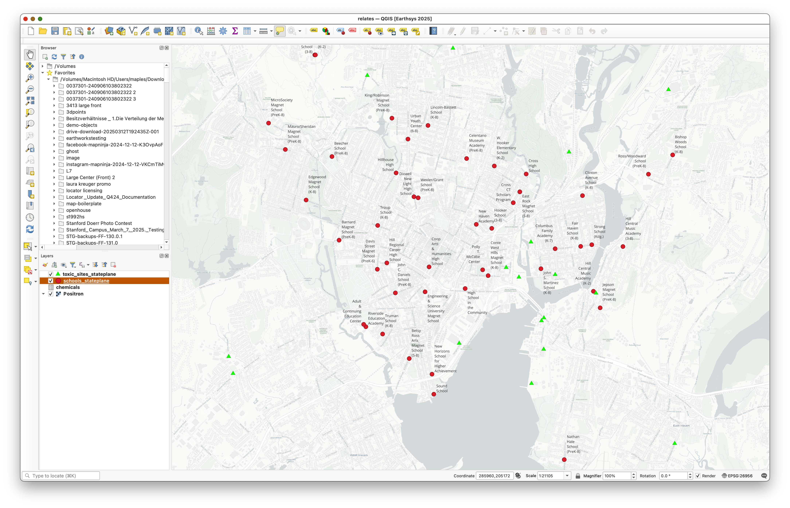
Examine the source data
- Open the Layer Properties for the layers in the project.
- Examine their CRS and their source paths.
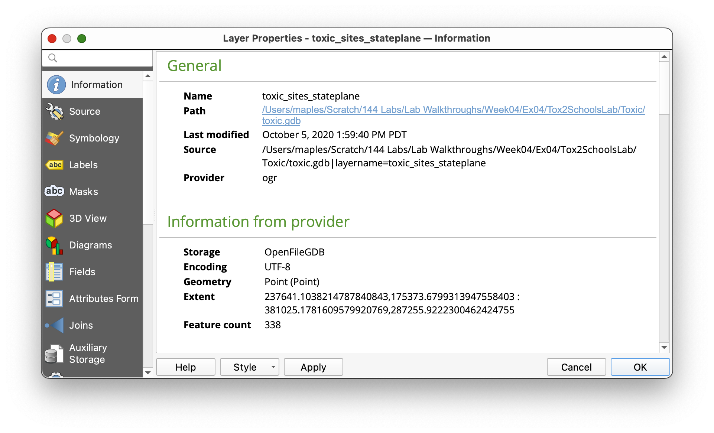
You should notice that the data is stored in a File Geodatabase.
Concept note: A File Geodatabase is an Esri format. QGIS can read it, which is useful, but read access is not the same thing as full editing support. This is a good reminder that GIS software often works across many file formats, but not every format is equally flexible in every program.
Part 2: Open DB Manager and the SQL Window
Why DB Manager matters
The DB Manager gives QGIS a database-like interface for working with project layers and spatial tables. In this lab, you will use it as the place where SQL queries are written, saved, run, and optionally loaded back into the project.
Open the DB Manager
- In the main menu, go to Database > DB Manager.
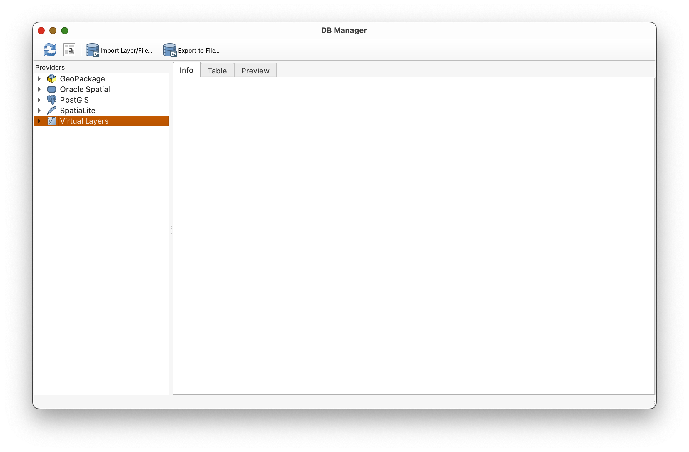
- In the DB Manager window, expand the Virtual Layers section in the left panel.
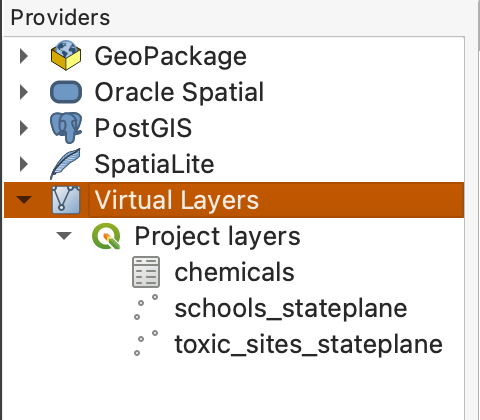
- Select your project layers in the Virtual Layers area.
- Click the SQL Window button
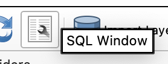
, or pressCtrl+Q, to open the SQL window.
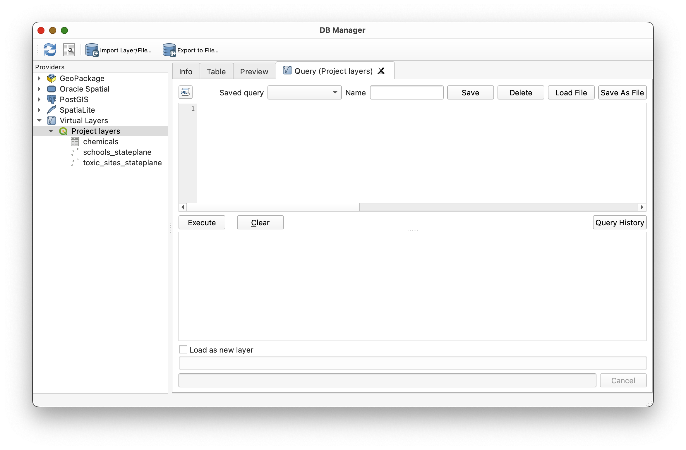
Why use Virtual Layers? Virtual Layers let QGIS treat layers already in your project as if they were database tables. That means you can use SQL without first exporting everything to an external database.
Part 3: Load the Saved Queries
QGIS allows saved queries to be stored in DB Manager. In this lab, you will use prepared SQL queries as examples, then alter some of them to see how the results change.
Important workflow note: When you save a modified version of a query, give it a unique name. Otherwise you may overwrite the original saved query provided for the lab.
- In the SQL window, look at the Saved query dropdown.
- Load queries from that dropdown as directed below.
- Pay attention to the query names. QGIS does not always sort them in a helpful order.
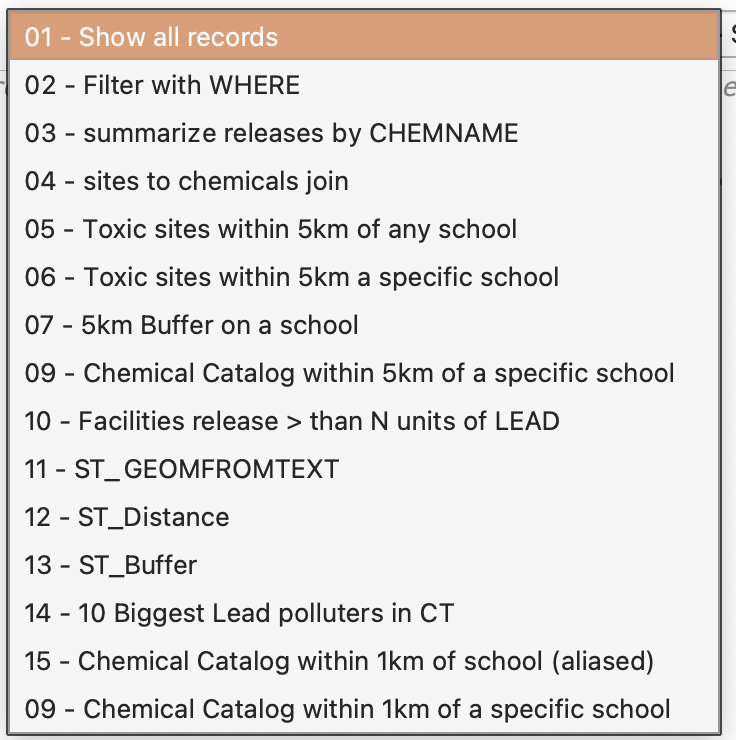
Part 4: Start with SELECT
What SELECT does
The SELECT statement is the core of SQL. It tells the database what data you want returned.
Load the query:
01 - Show all records
SELECT *
FROM chemicals;
This query returns all columns and all rows from the chemicals table.
- Load
01 - Show all records. - Click Execute.
- Review the output table.
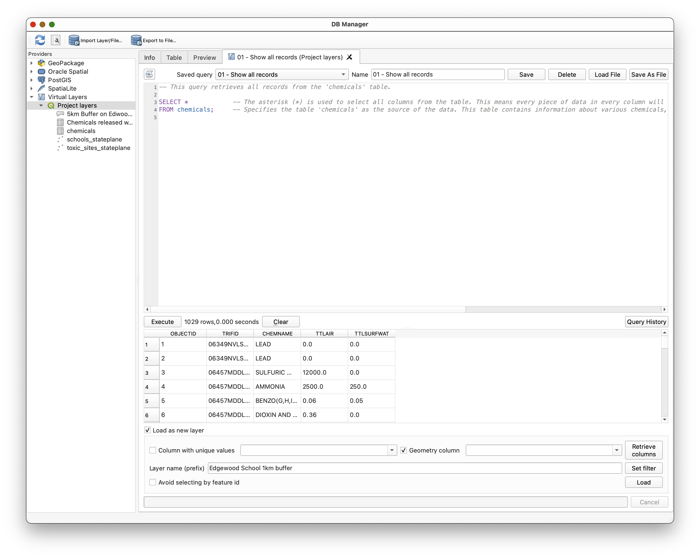
Concept note:
SELECT *is useful for exploration, but it is usually not the most thoughtful long-term query. As your work becomes more precise, you will usually choose only the columns you actually need.
Part 5: Use WHERE to Filter Rows
What WHERE does
The WHERE clause limits what SELECT returns. It filters rows based on a condition.
Load the query:
02 - Filter with WHERE
SELECT *
FROM toxic_sites_stateplane
WHERE FCITY = 'NEW HAVEN';
- Load
02 - Filter with WHERE. - Execute the query.
- Notice that the result now includes only facilities in New Haven.
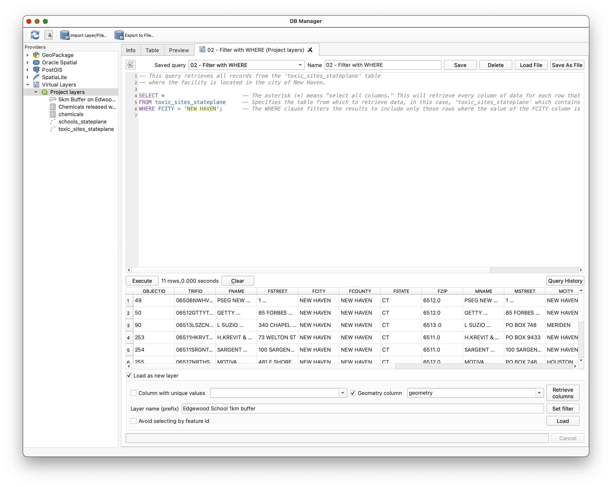
Concept note:
WHEREis the bridge between "show me the table" and "show me only the part of the table that matters to my question."
Part 6: Use GROUP BY and Aggregate Functions
Why summarize data?
Sometimes you do not want every individual row. Sometimes you want a summary. That is where aggregate functions such as SUM() become useful.
Load the query:
03 - summarize releases by CHEMNAME
SELECT
CHEMNAME,
SUM(TTLAIR) AS TotalAirRelease,
SUM(TTLSURFWAT) AS TotalSurfaceWaterRelease
FROM chemicals
GROUP BY CHEMNAME;
- Load
03 - summarize releases by CHEMNAME. - Execute the query.
- Review the output.
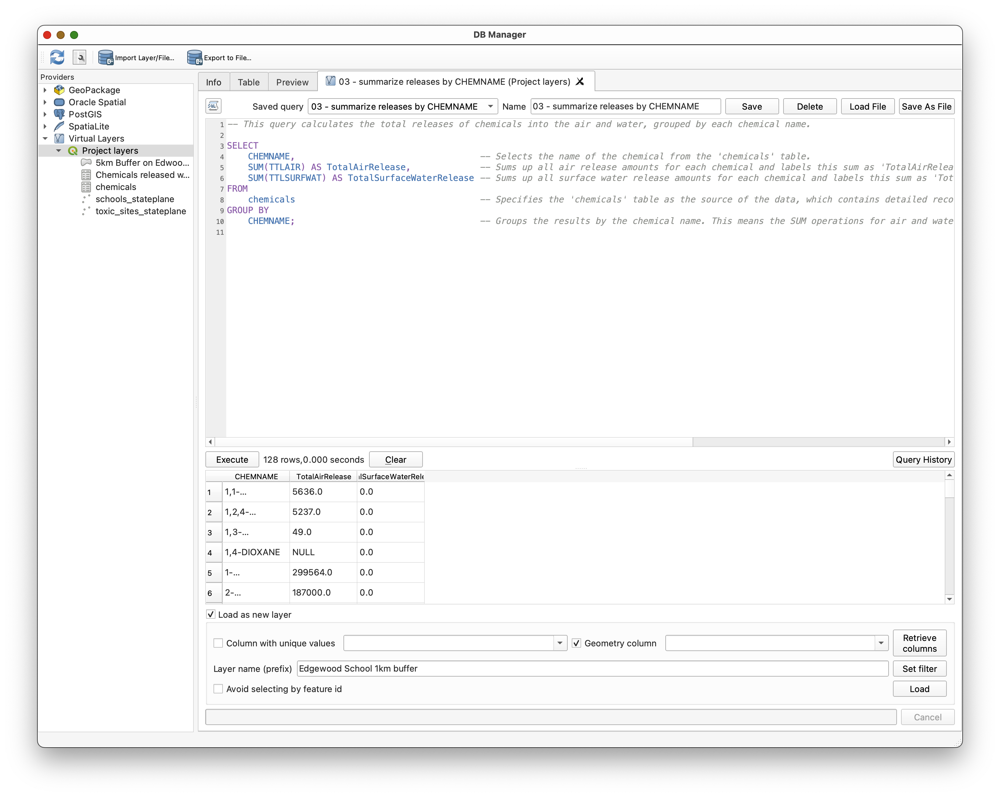
Concept note:
GROUP BYchanges the level of analysis. Instead of looking at each individual release record, you are now summarizing rows into one result per chemical name.
Part 7: Join Tables
Why join?
The toxic_sites_stateplane table has the facility geometry and site information. The chemicals table has release information. Neither table alone fully answers our question. We need to combine them.
Load the query:
04 - sites to chemicals join
SELECT
toxic_sites_stateplane.FNAME,
chemicals.CHEMNAME,
chemicals.TTLAIR,
chemicals.TTLSURFWAT
FROM toxic_sites_stateplane
JOIN chemicals
ON toxic_sites_stateplane.TRIFID = chemicals.TRIFID;
- Load
04 - sites to chemicals join. - Execute the query.
- Review the result.
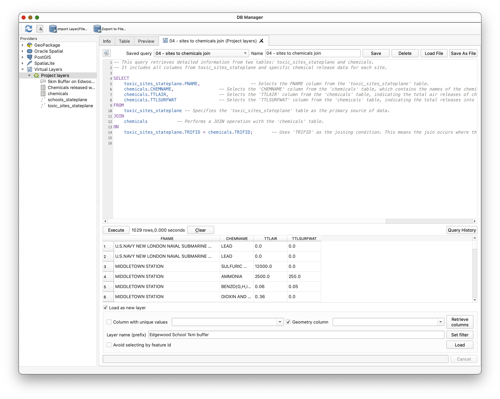
Concept note: A join does not magically "merge everything forever." It creates a result set by matching rows from two tables based on a key field. Here,
TRIFIDis the key that allows those tables to relate to one another.
Because one site can have multiple chemical records, a single site may appear multiple times in the joined result.
Part 8: Ask a Spatial Question with ST_Distance()
Why use spatial SQL?
So far the SQL has treated the data as tables. Spatial SQL lets us treat geometry as something that can also be queried mathematically.
Load the query:
05 - Toxic sites within 5km of a school
SELECT DISTINCT
toxic_sites_stateplane.*
FROM
toxic_sites_stateplane,
schools_stateplane
WHERE
ST_Distance(toxic_sites_stateplane.Geometry, schools_stateplane.Geometry) <= 5000;
- Load
05 - Toxic sites within 5km of a school. - Execute the query.
- Review the result set.
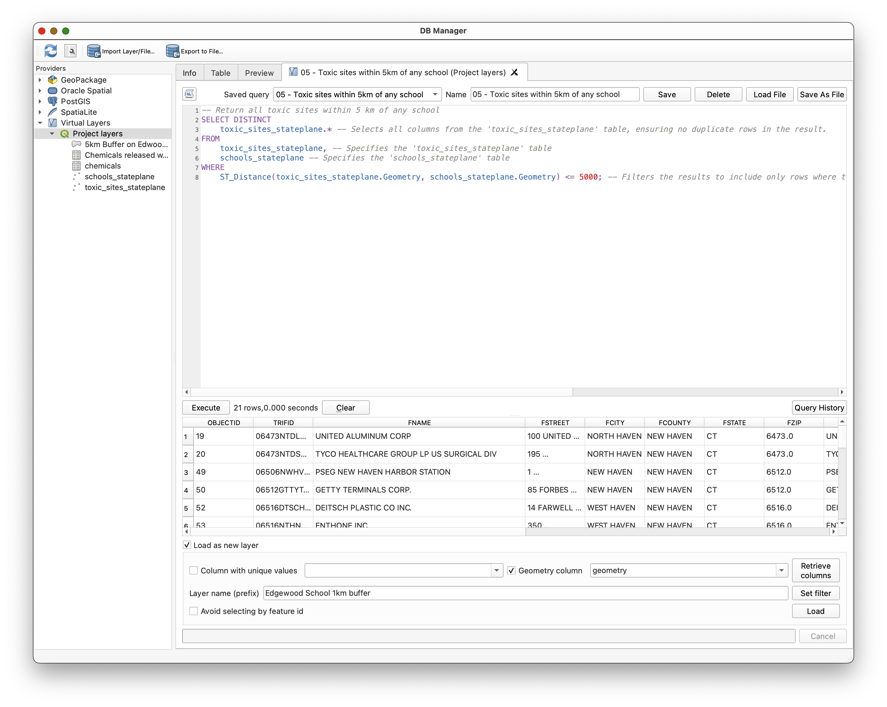
Concept note:
ST_Distance()is doing the same kind of proximity reasoning you might do with a buffering tool or a spatial selection tool, but here you are expressing it directly in SQL.
Part 9: Create and Load a Buffer with ST_Buffer()
Why load SQL results as layers?
Some SQL queries return ordinary tables. Others return geometry. When a query returns geometry, QGIS can load that result as a new layer.
Load the query:
07 - 5km Buffer on a school
SELECT
schools_stateplane.NAME,
ST_Buffer(schools_stateplane.geometry, 5000) AS geometry
FROM schools_stateplane
WHERE schools_stateplane.NAME = 'Edgewood Magnet School (K-8) ';
- Load
07 - 5km Buffer on a school. - Review the query.
- Check Load as new layer.
- Name the result something meaningful, such as
Edgewood_5km_Buffer. - Click Load.
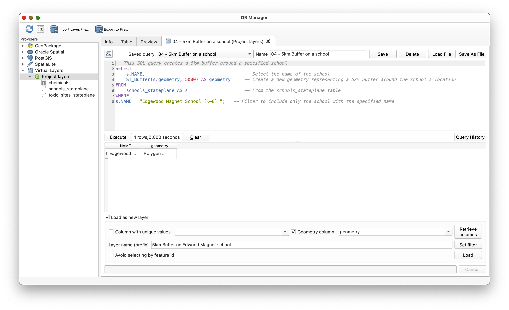
Style the buffer layer
- Return to the main QGIS window.
- Select the new buffer layer.
- Open the Layer Styling panel using the button
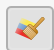
. - Style the buffer with a transparent red fill and a visible outline.
- Drag the buffer layer below
schools_stateplaneso the school remains visible on top.
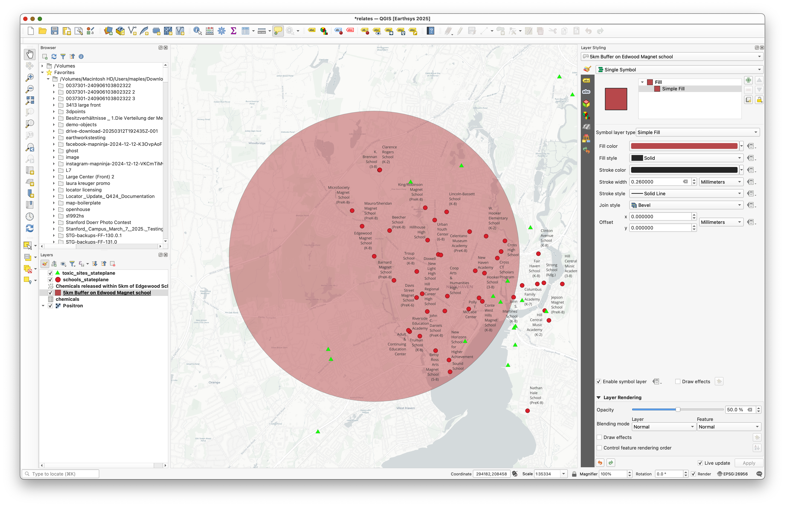
Concept note: SQL results do not have to stay trapped in a table. In QGIS, a spatial SQL query can become a real map layer that you can symbolize and analyze further.
Part 10: Build a Chemical Catalog Near a School
Now you will move from example queries toward the main analytic task.
Load the query:
09 - Chemical Catalog within 1km of school
This query:
- Identifies toxic sites within 1 km of a specific school
- Joins those sites to the chemicals table
Summarizes total air and water releases by chemical
Load
09 - Chemical Catalog within 1km of school.- Review the query.
- Execute it to see the initial results.
Uncomment:
-- ORDER BY TotalAirRelease DESC;Execute the query again and notice how the result changes.
Then comment that line back out and instead uncomment:
-- ORDER BY TotalSurfaceWaterRelease DESC;Execute the query again and compare the ranking.
- Use Load as new layer to add the result table to your QGIS project.
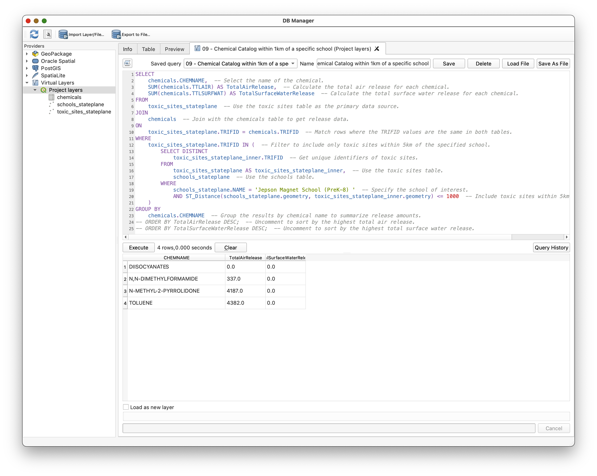
Concept note: The same data can support multiple interpretations depending on how you sort and summarize it. "Largest air release" and "largest water release" are related questions, but they are not identical questions.
Part 11: Create the Final Map Layout
Use the SQL results to build a final map layout showing the school, its 1 km context, and the summarized chemical catalog.
Build the layers you need
- Make only the school you queried visible in the map.
Hint: Use the
02 - Filter with WHEREquery as a model to create aSELECTstatement onschools_stateplanefor the school you analyzed. - Load that school as a new layer.
- Create a 1 km buffer for that school by adapting the earlier buffer query.
- Make sure the toxic sites within that buffer are visible.
- Add a basemap that supports the operational layers clearly.
Add the chemical catalog table to the layout
- Open the QGIS Layout window.
- Insert the chemical catalog table using the Add Attribute Table tool.
- Arrange the layout so the map and table support one another.
Include standard layout elements
Be sure your map includes:
Export
Export the final layout as a PDF for submission.
Turn-In Guidance
Your final submission should include:
- A map focused on the school you analyzed
- A 1 km buffer around that school
- The relevant toxic sites in that buffer
- The summarized chemical catalog table in the map layout
- Standard cartographic elements, including your name and date
Conclusion
In this lab, you used SQL in QGIS not just to view data, but to ask structured questions of it. You:
- Explored project layers through the DB Manager
- Used
SELECTandWHEREto retrieve and filter rows - Used
GROUP BYandSUM()to summarize data - Used
JOINto connect related tables through a shared key - Used
ST_Distance()andST_Buffer()to ask spatial questions in SQL - Loaded query results back into QGIS as layers and tables
- Built a final map from SQL-driven analysis
This is an important step in GIS fluency. Once you understand that spatial layers are also tables, and that those tables can be queried with SQL, you gain a much more flexible way to explore, summarize, and analyze data.